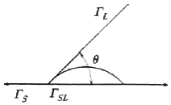

침투비파괴검사기사 (2019-04-27 기출문제)
1과목: 비파괴검사 개론
1. 방사선투과시험을 적용할 때의 제한사항을 나열한 것으로 틀린 것은?
- 결함의 형태네 따라 검출이 곤란한 경우가 있다.
- 시험체의 두께에는 제한이 없으나 차폐를 해야 한다.
- 시험체 표면의 미세한 균열 검출이 곤란한 경우가 있다.
- 방사선에 의한 인체의 장해가 발생할 수 있다.
(정답률: 73%)

2. 주조품과 같이 조대한 결정입자 구조의 금속을 초음파탐상시험을 할 때 발생할 수 있는 현상으로 틀린 것은?
- 잡음 신호가 많아진다.
- 저면 반사에코의 크기가 줄어든다.
- 감쇠현상이 커 침투력이 감소된다.
- 결정입자의 크기가 조대하므로 침투력이 증가한다.
(정답률: 71%)
3. 다음 중 0 K(캘빈온도)와 동등한 온도를 나타내는 것은?
- -360°R
- -170°F
- 0℃
- -273℃
(정답률: 80%)
4. 다음 중 침투탐상시험의 특성이 아닌 것은?
- 대형 부품의 현장 검사가 가능하다.
- 미세한 표면 불연속의 검출이 가능하다.
- 불연속의 깊이를 정확하게 측정할 수 있다.
- 서로 다른 침투액을 혼용하여 사용할 경우 감도가 저감되는 효과가 나타날 수 있다.
(정답률: 84%)
5. 비자성체의 전도체 표면 및 표면직하 결함을 표면 개구 여부에 관계없이 검출하고자 할 때 가장 적합한 비파괴검사 방법은?
- 자분탐상시험
- 침투탐상시험
- 음향방출시험
- 와전류탐상시험
(정답률: 65%)
6. 상온에서 순철의 결정 구조로 옳은 것은?
- FCC
- HCP
- BCT
- BCC
(정답률: 49%)
7. Al-Cu-Si계 합금으로 Si에 의하여 주조성을 개선하고, Cu로 피삭성을 좋게 한 합금은?
- 라우탈
- 슈퍼인바
- 문쯔메탈
- 하이드로날륨
(정답률: 59%)
8. 금속을 연마한 후 부식시켜 현미경으로 조직을 관찰하는 경우에 대한 설명으로 옳은 것은?
- 결정면은 결정 입계보다 빨리 부식한다.
- 부식 속도는 부식제에 따라 다르다.
- 결정의 모든 방향으로 부식 속도는 항상 같다.
- 부식 속도는 모든 조직에서 항상 같다.
(정답률: 72%)
9. Ti 합금 중 α+β 조직으로 구성된 합금으로 열처리가 가능하고 쉽게 용접 단조 및 기계가공 할 수 있는 합금은?
- Ti-6 wt%Al-4wt%V
- Ti-5 wt%Al-2.5wt%Sn
- Ti-13 wt%V-11wt%Cr-3wt%Al
- Ti-11.5 wt%Mo-6wt%Zr-4.5wt%Sn
(정답률: 47%)
10. 다공질 금속의 제조방법이 아닌 것은?
- 금속분말이나 단섬유를 소결하는 분말야금방법
- 용탕금속 중에 발포제를 직접 첨가해서 발포시키는 방법
- 중력 상태에서 용융금속 내의 가스를 뽑아내는 방법
- 발포재료 등과 같이 밀도가 작은 재료를 금속과 복합화 시키는 방법
(정답률: 56%)
11. 베빗 메탈(Babbit metal)에 관한 설명으로 옳은 것은?
- Si을 주성분으로 하고 Cu, Sn을 첨가한 것으로 실리콘계 화이트메탈이다.
- Zn을 주성분으로 하고 Cu, Sn을 첨가한 것으로 아연계 화이트메탈이다.
- Sn을 주성분으로 하고 Cu, Sb을 첨가한 것으로 주석계 화이트메탈이다.
- Pb을 주성분으로 하고 Cu, Sn을 첨가한 것으로 납계 화이트메탈이다.
(정답률: 52%)
12. 과공석강의 일반적인 조직은?
- 초석 Fe3C+Pearlite
- γ고용체+Ferrite
- β고용체+Austenite
- δ고용체+Ferrite
(정답률: 55%)
13. 시험부의 지름이 5cm인 인장시험편을 표점거리 10cm인 상태로 인장 시험한 결과, 시험 중 최대하중은 500kgf이고, 파단 후 시험부의 지름이 4.5cm였을 때 인장시험편의 인장강도는 약 몇 kgf/cm2인가?
- 100
- 25
- 50
- 5
(정답률: 64%)
14. Mg-Al계 합금에 소량의 Zn과 Mn을 첨가한 합금은?
- 자마크(zamak)
- 엘렌트론(elektron)
- 하스텔로이(hastelloy)
- 모넬 메탈(monel metal)
(정답률: 41%)
15. 쾌삭강에서 피절삭성을 향상시키기 위해 첨가하는 성분은?
- C
- Si
- Mn
- S
(정답률: 39%)
16. 전류가 높고 아크 길이가 특히 긴 경우에 발생하며 용접금속의 비산에 의한 용접봉의 손실을 초래하는 결함은?
- 기공
- 오버랩
- 스패터
- 용입 불량
(정답률: 70%)
17. 용접재를 서로 맞대어 가압하면서 대전류를 통하고 축 방향에 큰 압력을 주어 용접하는 전기 저항 용접법은?
- 업셋 용접
- 마찰 용접
- 스터드 용접
- 프로젝션 용접
(정답률: 50%)
18. 다음 중 용접 변형을 발생시키는 인자가 아닌 것은?
- 용접 전류
- 아크 전압
- 용접 층수
- 구속 지그
(정답률: 63%)
19. 아크 전류가 일정할 때 아크 전압이 높아지면 용접봉의 용융 속도가 늦어지고 아크 전압이 낮아지면 용접봉의 용융 속도가 빨라지는 아크의 특성은?
- 부저항 특성
- 절연회복 특성
- 전압회복 특성
- 아크길이 자기제어 특성
(정답률: 44%)
20. 아크 전류가 300A 아크, 전압이 25V, 용접속도가 20cm/min인 경우 용접 길이 1cm당 발생되는 용접 입열은 몇 J/cm인가?
- 20000
- 22500
- 25500
- 30000
(정답률: 72%)
2과목: 침투탐상검사 원리
21. 전처리 시 용접부와 같이 부품의 일부만을 검사하는 경우 검사대상 부분에서 일반적으로 인접 부분을 최소한 몇 인치 범위까지 세척을 해야 하는가?
- 1/4인치
- 1인치
- 2인치
- 3인치
(정답률: 69%)
22. 후유화성 형광침투탐상검사에서 유화제를 적용하는 방법으로 틀린 것은?
- 시편에 분무시키는 방법
- 시편에 붓칠하는 방법
- 시편을 침지시키는 방법
- 시편에 부어서 적용하는 방법
(정답률: 67%)
23. 염색침투탐상으로 검사한 시험체에 대해서는 일반적으로 형광침투탐상으로 재검사를 안하는데 그 이유가 아닌 것은?
- 거짓지시를 나타낼 수 있는 현상체체가 탐상표면에 남아있기 때문이다.
- 대부분의 염색침투액은 형광성을 가지고 있기 때문이다.
- 침투액을 섞어서 사용하면 안 되기 때문이다.
- 관찰이 어려워지기 때문이다.
(정답률: 66%)
24. 염색 침투액으로 검사 후 침투액의 제거 없이 형광 침투액을 사용해서는 안 되는 이유는?
- 거짓지시를 나타내는 현상체가 시험체의 표면에 남아 있어서
- 침투액을 혼용해서는 안 되므로
- 염색 침투액은 형광물질의 성능을 약화시키므로
- 불연속의 평가가 어려워지기 때문에
(정답률: 42%)
25. 침투탐상검사에서 재시험할 경우 가장 철저히 해야하는 절차는?
- 후처리
- 전처리
- 침투처리
- 현상처리
(정답률: 72%)
26. 침투탐상검사에서 침투제의 침투시간은 적심속도와 밀접한 관계가 있다. 다음 중 이 적심속도에 가장 적게 영향을 미치는 것은?
- 침투제의 표면장력
- 침투제의 밀도
- 침투제의 접촉각
- 시험체의 온도
(정답률: 56%)
27. 형광 침투제를 이용한 침투탐상검사에서 사용할 자외선 조사장치 및 암실의 밝기로 틀린 것은?
- 자외선 조사장치의 강도는 필터에서 15인치 떨어진 표면에서 800μw/cm3 이상이어야 한다.
- 자외선 조사장치의 자외선 파장은 330nm를 사용해도 된다.
- 자외선 조사장치가 설치된 암실의 밝기가 10lx이어도 된다.
- 자외선 조사장치의 강도는 필터로부터 800μw/3 이상이어야 한다.
(정답률: 46%)
28. 수동 정전분사기(Electrostatic Spraying)로 침투액을 분사할 때 안전을 위해서 필요한 침투액의 전기저항의 정도는?
- 높은 저항
- 중간정도 저항
- 낮은 저항
- 저항은 문제가 되지 않음
(정답률: 42%)
29. 녹, 산화스케일, 도료 등의 고형오염을 전처리하는 것으로 적합한 것은?
- 기계적처리방법을 우선으로 한다.
- 물세척을 우선으로 한다.
- 화학적처리방법을 우선으로 한다.
- 연삭기 처리를 우선으로 한다.
(정답률: 63%)
30. 침투탐상검사에서 액체의 적심성을 나타내는 지표로 접촉각을 사용한다. 이 접촉각과 표면장력의 관계를 나타내는 식을 바르게 표현한 것은? (단, ΓL:침투액의 표면장력, ΓS:시험체의 표면장력, ΓSL:고체/액체 계면장력, θ:접촉각이다.)

- ΓS=ΓSL+ΓLㆍcosθ
- ΓS=ΓSL×ΓLㆍsinθ
- ΓS=ΓL+ΓSLㆍsinθ
- ΓS=ΓL×ΓSLㆍsinθ
(정답률: 67%)
31. 침투탐상검사의 침투액에 대하여 대비시험편을 이용하여 성능시험을 하는 이유가 아닌 것은?
- 결함 검츨 성능 비교
- 조작방법의 적합여부 조사
- 사용 중인 침투액과의 비교
- 결함 지시모양의 세척성 비교
(정답률: 67%)
32. 재료의 침투탐상시험 시 불연속을 막아 버릴 염려가 있는 금속의 녹, 스케일 등을 제거하는 전처리 방법으로 가장 효과적인 것은?
- 증기 세척
- 알칼리 세척
- 초음파 세척
- 청정제 세척
(정답률: 57%)
33. 용접 구조물의 보수검사 시 나타나지 않는 결함은?
- 피로 균열
- 부식 균열
- 크리프 균열
- 크레이트 균열
(정답률: 58%)
34. 침투탐상검사에서 불연속이나 결함에 의한 지시가 아닌 외사모양의 발생에 대한 설명으로 틀린 것은?
- 조작 장법이 적합하지 않을 때 발생한 지시
- 시험체의 형태나 표면 거칠기로부터 발생한 지시
- 외부로부터 오염 등에 의해 발생한 지시
- 전처리가 과다할 때 발생한 지시
(정답률: 50%)
35. 침투탐상검사 전처리에서 고려되어야 할 사항으로 틀린 것은?
- 예상되는 오염물의 종류
- 시험체의 제작공정
- 시험체의 용도 및 재질
- 침투액의 감도
(정답률: 49%)
36. 침투탐상검사에 사용되는 대비시험편의 사용목적으로 틀린 것은?
- 탐상제 제작 시 제품의 품질관리
- 침투액의 침투인자 변수 측정시험
- 조작방법이나 조작조건의 적합여부
- 사용하는 탐상제의 품질과 성능의 유지 관리
(정답률: 55%)
37. 침투탐상검사에서 액체 속에 고체 입자가 분산되어 있는 상태를 이르는 용어는?
- 유화
- 현상
- 에어로졸
- 현탁
(정답률: 71%)
38. 침투탐상검사는 거의 모든 재질에 대해서 검사가 가능하나 검사가 어려운 재질이 있다. 이러한 검사가 가장 어려운 재질은 무엇인가?
- 다공성 또는 흡수성 재질
- 비다공성 또는 매끄러운 표면을 가진 재질
- 비흡수성 또는 반들반들한 재질
- 비다공성 또는 비흡수성 재질
(정답률: 64%)
39. 하전입장듸 흡착성을 이용한 침투탐상검사방법에서 침투액의 전도도 상관관계는?
- 전도도와는 무관하다.
- 전도도는 1이어야 한다.
- 전도도가 높은 침투액을 사용한다.
- 전도도가 낮은 침투액을 사용한다.
(정답률: 34%)
40. 침투탐상검사에서 탐상제의 성능은 결함의 검출에 큰 영향을 미치므로, 탐상제의 성능을 점검해야 한다. 다음 중 점검의 필요성이 가장 적은 것은?
- 사용 중인 밀폐형 에어로졸(Aerosol Can)의 성능시험을 하는 경우
- 탐상제를 세로 선정하여 구입한 경우
- 동일한 탐상제를 신규 구입하여 이전 제품과 성능을 비교해야 하는 경우
- 개방형 용기에 탐상제를 장기간 보관하여 사용하고자 하는 경우
(정답률: 51%)
3과목: 침투탐상검사 시험
41. 표면이 거칠거나, 소형 다량의 시험체를 검사 하는데 가장 효과적인 방법은 무엇인가?
- FB-S
- FB-D
- FA-D
- FA-W
(정답률: 35%)
42. 다음 중 미세결함검출감도가 가장 좋은 방법은?
- 수세성 형광침투탐상검사
- 용제제거성 형광침투탐상검사
- 수세성 염색침투탐상검사
- 용제제거성 염색침투탐상검사
(정답률: 52%)
43. 매우 불결하고 표면에 그리스가 뭍어있는 부품의 표면처리로 가장 적절한 것은?
- 표면에는 어떠한 잔류물도 남아 있지 않도록 완전히 세정해야 한다.
- 휘발성 용제 세척제로 다시 한 번 세척해야 한다.
- 표면개구부에 청정제가 들어있지 못하도록 열을 가해 제거시킨다.
- 용제 세척제로 다시 한 번 세척해야 한다.
(정답률: 69%)
44. 자외선조사등(black light)을 사용 시 수은등이 충분히 가열될 때까지 최소 몇 분을 주어야 하는가?
- 1분
- 5분
- 10분
- 15분
(정답률: 68%)
45. 폐쇄형 용기 내부의 용접부를 침투탐상검사할 때, 침투제 적용방법으로 가장 효과적인 것은?
- 붓칠법
- 분무법
- 침적법
- 배액법
(정답률: 42%)
46. 다음 중 침투탐상검사를 적용할 때에 고려할 사항으로 가장 거리가 먼 것은?
- 검출할 결함의 종류 및 크기
- 검사에 사용되는 장치
- 제품의 제조 형태
- 검사품의 두께와 형태
(정답률: 52%)
47. 침투탐상검사 시 가시도 측정에 필요한 반사된 빛의 양이 2%라면 R.V.U(Relative Visibility Units)의 값은 얼마인가?
- 2
- 20
- 50
- 100
(정답률: 43%)
48. 다음 중 침투탐상검사 후에 탐상결과의 하나인 침투지시 모양을 영구적으로 보관하는데 효과적인 현상제는?
- 휘발성 용제 현상제
- 플라스틱 필름 현상제
- 분말 현상제
- 수용성 현상제
(정답률: 77%)
49. 후유화성 침투탐상검사가 이용되는 이유가 아닌 것은?
- 단순 형상의 소형 양산 부품에 적합하다.
- 표면이 거친 부품의 표면흠 검출이 용이하다.
- 깊이가 얕고 폭이 넓은 결함 검출에 우수하다.
- 미세결함 검출감도가 다른 방법보다 비교적 우수하다.
(정답률: 60%)
50. 침투탐상시험의 현상제 성능검사에 대한 설명으로 틀린 것은?
- 건식 현상제는 육안으로 관찰한다.
- 습식 현상제는 비중계로 농도를 측정한다.
- 건식 현상제의 습기는 측정할 필요가 없다.
- 습식 현상제는 그 제조회사의 권고치와 같으면 사용해도 좋다.
(정답률: 66%)
51. 니켈-크롬 도금균열 대비시험편의 특징으로 틀린 것은?
- 깊이가 일정한 균열을 재현성이 좋게 만들 수 있다.
- 장시간 반복하여 사용할 수 있다.
- 실제의 시험체 표면과 일치하는 것이 용이하다.
- 도금, 곡률가공 등에 있어서 기술이 필요하고 제작이 어렵다.
(정답률: 48%)
52. 후유화성 형광침투액 및 습식현상제를 사용하기 위한 반거치식 장비를 설치하고자 할 때 건조기의 위치로 적당한 것은?
- 유화탱크 앞에
- 현상탱크 뒤에
- 현상탱크 앞에
- 세척단계 후에
(정답률: 59%)
53. 다음 중 의사모양이 나타나기 가장 쉬운 경우는?
- 침투시간이 길고 세척처리가 긴 경우
- 유화시간이 길고 건조온도가 높은 경우
- 검사체의 표면이 매끄럽고 형상이 단순한 경우
- 검사체의 표면이 거칠고 형상이 복잡한 경우
(정답률: 60%)
54. 침투탐상검사에서 유화시간이 짧은 경우 어떤 현상이 일어나는가?
- 깊이가 얕은 결합 속의 침투제가 유화된다.
- 깊이가 깊은 결합 속의 침투제가 유화된다.
- 부적합한 배경색을 나타낸다.
- 과세척의 요인이 된다.
(정답률: 58%)
55. 주조로 제작된 밸브를 침투탐상검사할 때 나타날 수 없는 결함은?
- 균열
- 수축공
- 블로우홀
- 스패터
(정답률: 62%)
56. 침투탐상검사에 사용되는 현상제의 특성에 관한 사항 중 틀린 것은?
- 건식 현상제는 현탁성이 좋아야 한다.
- 침투액을 흡출하는 능력이 좋아야 한다.
- 시험 표면에 대한 부착성이 좋아야 한다.
- 형광침투액 사용 시 자외선에 의해 형광을 발하지 말아야 한다.
(정답률: 37%)
57. 물베이스 유화제법의 침투탐상검사 과정을 다음과 같이 나타낼 때 □안에 4단계 과정 중 “2”단계에 알맞은 과정은?
- 관찰
- 전처리
- 유화제 적용
- 후처리
(정답률: 77%)
58. 유화제가 갖추어야 할 조건이 아닌 것은?
- 결함에 대한 침투성이 낮아야 한다.
- 후유화성 침투액과 잘 용해되어야 한다.
- 침투액의 혼입에 의한 성능저하가 적어야 한다.
- 시험체의 표면에서 침투액과 동일한 색채를 가져야 한다.
(정답률: 72%)
59. 백색의 분말을 사용하여 결함이 있는 부위에만 현상되는 현상법은?
- 속건식 현상법
- 무 현상법
- 습식 현상법
- 건식 현상법
(정답률: 67%)
60. 침투탐상검사에 사용하는 대비시험편의 사용방법을 옳게 설명한 것은?
- 탐상제의 침투시간을 설정하는데 사용한다.
- A형 비교시험편으로 온도에 의한 영향을 점검할 때에는 중간의 흠을 기준으로 기준탐상제와 비교탐상제를 동시에 확인한다.
- 대비시험편은 탐상제의 성능 및 조작방법의 적당 여부를 조사하는데 사용한다.
- 한번 사용한 대비시험편은 재사용이 불가능하다.
(정답률: 69%)
4과목: 침투탐상검사 규격
61. 침투탐상 시험방법 및 침투지시모양의 분류(KS B 0816)에서 결함의 기록에 적지 않아도 되는 것은?
- 결함의 종류
- 결함 깊이
- 결함 길이
- 결함 개수
(정답률: 68%)
62. 침투탐상 시험방법 및 침투지시모양의 분류(KS B 0816)에 따라 사용 중인 용제제거성 침투액의 성능시험을 A형 대비시험편을 사용하여 하고자 할 경우 옳은 것은?
- 1조의 대비시험편 각각의 면에 사용 중인 침투액과 기준침투액을 적용하고, 침투시간을 서로 다르게 하고 잉여침투제 제거처리부터 동일한 조건으로 실시한 후 침투력을 비교한다.
- 1조의 대비시험편 각각의 면에 사용 중인 침투액과 기준침투액을 적용하고, 용제제거처리를 서로 다르게 하고 현상처리를 동일한 조건으로 실시한 후 용제제거성을 비교한다.
- 1조의 대비시험편 각각의 면에 사용 중인 침투액과 기준침투액을 적용하고 동일조건으로 시험을 실시하여 지시모양을 비교한다.
- 1조의 대비시험편 각각의 면에 사용 중인 침투액과 기준침투액을 적용하여 서로 다른 조건으로 실시하고 지시모양을 비교한다.
(정답률: 65%)
63. 침투탐상 시험방법 및 침투지시모양의 분류(KS B 0816)에서 잉여 침투액의 제거방법에 따른 분류 중 기호 A가 의미하는 것은?
- 수세에 의한 방법
- 용제 제거에 의한 방법
- 물베이스 유화제를 사용하는 후유화에 의한 방법
- 기름베이스 유화제를 사용하는 후유화에 의한 방법
(정답률: 73%)
64. 침투탐상 시험방법 및 침투지시모양의 분류(KS B 0816)에 따른 분산결함의 설명으로 옳은 것은?
- 갈라짐 이외의 결함으로 선상결함이 아닌 것
- 정해진 면적 안에 존재하는 여러 개 이상의 결함
- 갈라짐 이외의 결함으로 그 길이가 나비의 3배 이상
- 거의 동일 직선상에 존재하고 상호거리가 가까운 것
(정답률: 71%)
65. 보일러 및 압력용기에 대한 침투탐상검사(ASME Sec.V Art.6)에서 검사보고서에 포함해야 될 내용이 아닌 것은?
- 탐상제의 종류
- 재료 및 두께
- 현상제의 종류
- 검사품의 제조일자 및 업체
(정답률: 68%)
66. 보일러 및 압력용기에 대한 침투탐상검사(ASME Sec.V Art.24 SE-165)에 따른 탐상시험으로 검출할 수 없는 결함은?
- 단조 겹침
- 크레이터 균열
- 그라인딩 균열
- 비금속 내부 개재물
(정답률: 71%)
67. 보일러 및 압력용기에 대한 침투탐상검사(ASME Sec.V Art.24 SE-165)에서 염색침투지시의 관찰 장소가 최소 얼마 이상인 조도가 필요한 것으로 규정하고 있는가?
- 256룩스
- 506룩스
- 756룩스
- 1076룩스
(정답률: 59%)
68. 보일러 및 압력용기에 대한 침투탐상검사(ASME Sec.V Art.24 SE-165)에 의해 알루미늄 재질시험체의 제품형태에 따라 침투시간이 다른 것은?
- 주조품
- 압출품
- 단조품
- 압연품
(정답률: 59%)
69. 침투탐상 시험방법 및 침투지시모양의 분류(KS B 0816)에서 기름베이스 유화제를 사용하는 후유화에 의한 방법을 나타내는 기호는?
- C
- D
- A
- B
(정답률: 58%)
70. 침투탐상 시험방법 및 침투지시모양의 분류(KS B 0816)에서는 철강 용접물에 대해 최소 침투시간을 5분으로 하는 온도범위는?
- 3~15℃
- 15~50℃
- 25~60℃
- 60℃이상
(정답률: 77%)
71. 침투탐상 시험방법 및 침투지시모양의 분류(KS B 0816)에 따라 침투시간을 정할 때에 고려해야 할 사항이 아닌 것은?
- 시험체의 재질
- 침투액의 종류
- 시험체와 침투액의 온도
- 시험자의 기량
(정답률: 76%)
72. 침투탐상 시험방법 및 침투지시모양의 분류(KS B 0816)에서 표준으로 하는 침투제 및 검사체 표면의 온도 범위로 알맞은 것은?
- 10°F~20°F
- 25°F~50°F
- 40°F~125°F
- 110°F~225°F
(정답률: 68%)
73. 보일러 및 압력용기에 대한 침투탐상검사(ASME Sec.V Art.6)에 규정된 과잉의 수세성 침투제를 물분무로 제거할 때 수압과 수온으로 옳은 것은?
- 수압은 30kPa, 수온은 110℃를 초과할 수 없다.
- 수압은 50kPa, 수온은 110℃를 초과할 수 없다.
- 수압은 150kPa, 수온은 43℃를 초과할 수 없다.
- 수압은 350kPa, 수온은 43℃를 초과할 수 없다.
(정답률: 50%)
74. 침투탐상 시험방법 및 침투지시모양의 분류(KS B 0816)에서 유화처리 방법에 대한 설명으로 틀린 것은?
- 기름베이스 유화제를 사용하는 경우 형광침투액을 사용할 때는 유화시간을 30초 이내로 한다.
- 기름베이스 유화제를 사용하는 경우 염색침투액을 사용할 때는 유화시간은 30초 이내로 한다.
- 물베이스 유화제를 사용하는 시험에서 염색침투액을 사용할 때는 유화시간을 2분 이내로 한다.
- 물베이스 유화제를 사용하는 시험에서 형광침투액을 사용할 때는 유화시간을 2분 이내로 한다.
(정답률: 39%)
75. 침투탐상 시험방법 및 침투지시모양의 분류(KS B 0816)에 규정되어 있는 침투탐상검사로 검출될 수 있는 불연속이 아닌 것은?
- 균열(Crack)
- 언더컷(Under cut)
- 겹침(Laps)
- 탕계(Cold shuts)
(정답률: 31%)
76. 보일러 및 압력용기에 대한 침투탐상검사(ASME Sec.V Art.6)에 의한 시험의 조작에서 시험체의 일부분을 시험하는 경우에 시험하는 부분에서 바깥쪽으로 몇 mm의 넓은 범위를 깨끗하게 전처리해야 하는가?
- 20
- 25
- 30
- 35
(정답률: 72%)
77. 침투탐상 시험방법 및 침투지시모양의 분류(KS B 0816)에서 합격한 시험체에 표시를 할 때 표시방법과 거리가 먼 것은?
- 각인
- 부식
- 녹자색 착색
- 적갈색 착색
(정답률: 55%)
78. 침투탐상 시험방법 및 침투지시모양의 분류(KS B 0816)에 의한 탐상 시 침투지시모양의 관찰에 대한 설명으로 옳은 것은?
- 건조처리 후 7~~60분사이가 바람직하다.
- 건조처리 전 7~60분사이가 바람직하다.
- 현상제 적용 후 7~60분사이가 바람직하다.
- 현상제 적용 전 7~60분사이가 바람직하다.
(정답률: 65%)
79. 압력용기 제작기준 규격 강제 부록(ASME Code Sev.Ⅷ)에 의해 침투탐상 지시모양을 평가할 때 허용되지 않는 지시는?
- 1/8인치인 선형지시
- 1/8인치인 원형지시
- 지시간 거리가 1/16인치인 3개월의 원형지시(1/8인치)가 직선상에 배열
- 지시간 거리가 1/8인치인 4개의 원형지시(1/8)가 직선상에 배열
(정답률: 30%)
80. 보일러 및 압력용기에 대한 침투탐상검사(ASME Sec.V Art.6)에 따라 플라스틱 제품에 용제제거성 염색침투액을 사용하였을 때 권고되는 최소 침투시간은?
- 5분
- 7분
- 10분
- 20분
(정답률: 59%)